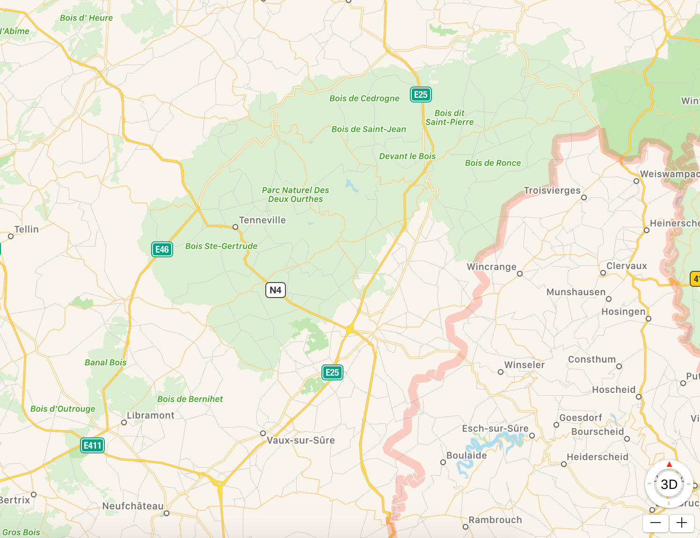

Het idee zou zijn om deze dames van 50+ op een tweedaagse te sturen en te verwennen met mooie rustige/ klassieke muziek. Om het weekend af te sluiten kan je per vier personen een hutje afhuren voor een wilde overnachting. Samen met hun vriendinnen kunnen ze tweedagen genieten van het zicht, muziek, eten en activiteiten. Een ideale combinatie voor vrouwen op pensioen met pit!
Als titel had ik gedacht aan "strijkers met pit". Er zijn drie podia waar de dames de hele dag door kunnen genieten van geweldige artiesten. Naast de podia kunnen de dames ook proeven van enkele unieke eetstandjes. Daarnaast kunnen ze wat rusten in één van de vier "chillplaatsen". Daar kunnen ze op hun gemak wat drinken of meedoen aan onze talloze workshops.
Het festival zou doorgaan op 7 en 8 juli 2018 Ik wou voor dit festival een rustige locatie dus koos ik voor de Ardennen.
Er is een bus voorzien om de dames er veilig heen te brengen. Hun plaatsje moeten ze vooraf reserveren. De busrit zou 8 euro kosten per persoon.